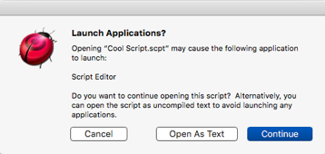

|
Opening a Compiled Script as Text |
|
Sometimes, AppleScript prevents Script Debugger from opening a compiled script file, or shows the file’s contents with raw Apple event codes. This indicates that something has gone wrong with the decompilation process. For example, an application or scripting addition needed by the script is missing, or a script’s internal alias to an application has broken.
If the script was originally saved with Script Debugger, you can open the script as text. To do so:
- Choose File > Recover Damaged Script.
This feature works because when Script Debugger saves a compiled script, it saves not only the compiled bytecode but also the uncompiled text. The uncompiled text is placed in the file’s resource fork (or, if the file is a bundle, in a file within the bundle).
Warning: If you edit a script with some other script editor application, the stored uncompiled text may no longer match the current state of the bytecode.
Open As Text Instead of Launching an Application
Script Debugger may automatically let you open a script as text, if you attempt to open a compiled script that targets an application which must be launched in order for AppleScript to decompile it.
For example, suppose Script Editor is not running and you open a compiled script that targets Script Editor. If Script Editor isn’t already running, AppleScript wants to launch it in order to display the script. Script Debugger detects this and can optionally intervene:
-
If your choice in Script Debugger’s General preferences is “Warn when applications may be launched,” Script Debugger presents this dialog:
You can proceed to open the script (and allow Script Editor to launch) if you wish, but perhaps the overhead of launching an application just to read a script seems unwarranted. If this script was saved with Script Debugger, it contains a text version, and you can click Open As Text to open that instead. Thus you can read the script without launching Script Editor. (But to compile the script you will have to let AppleScript launch Script Editor.)
If the script does not contain a text version, the Open As Text button will not be present.
-
If your choice in Script Debugger’s General preferences is “Always open as text without launching applications,” then, if the script can be opened as text, Script Debugger will open it as text, without bothering to display the dialog.